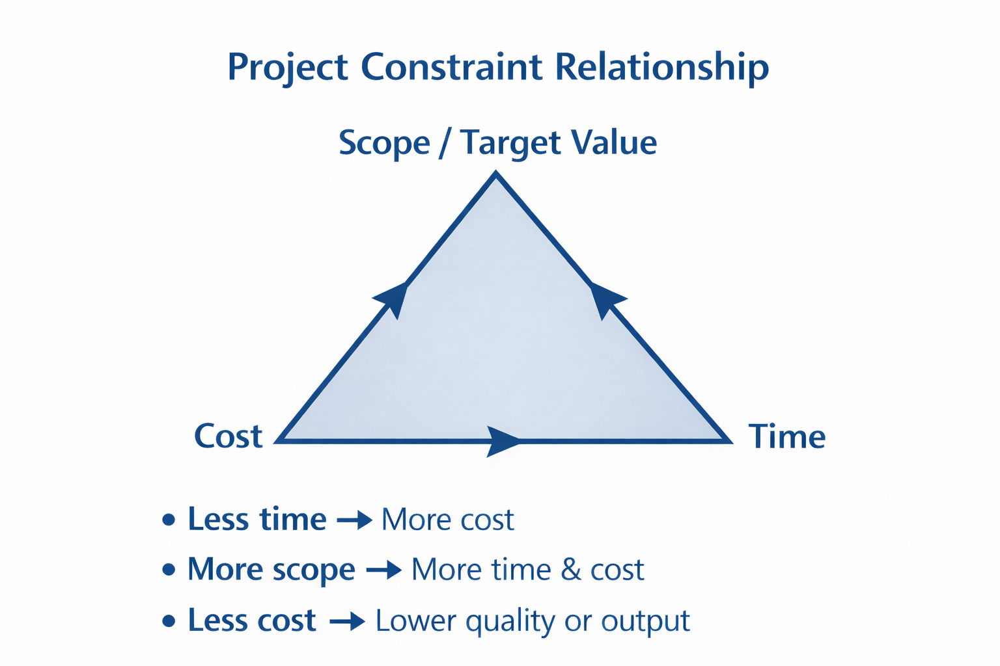
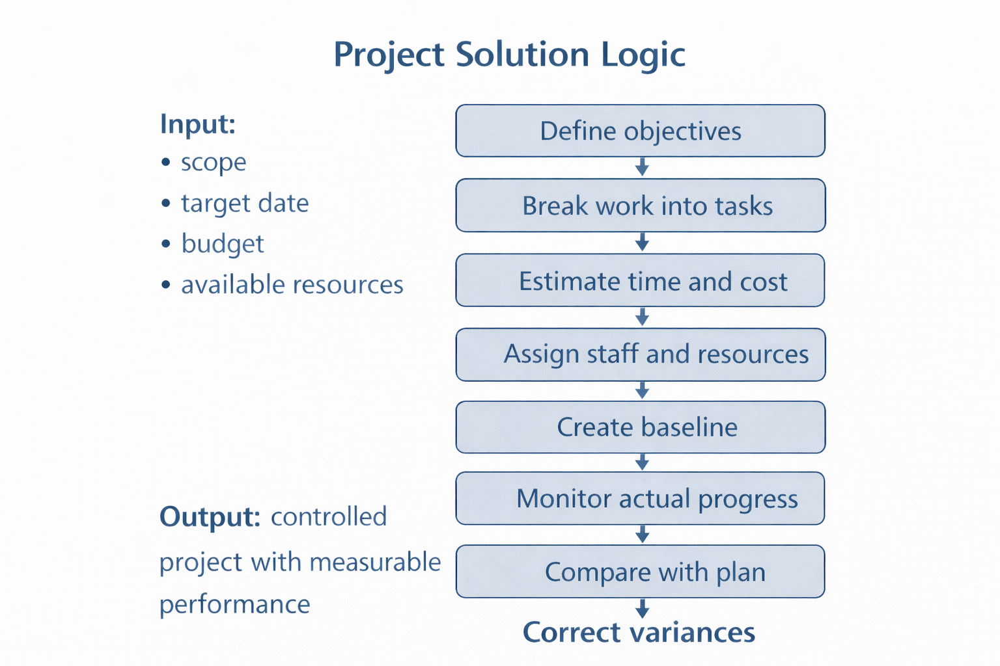
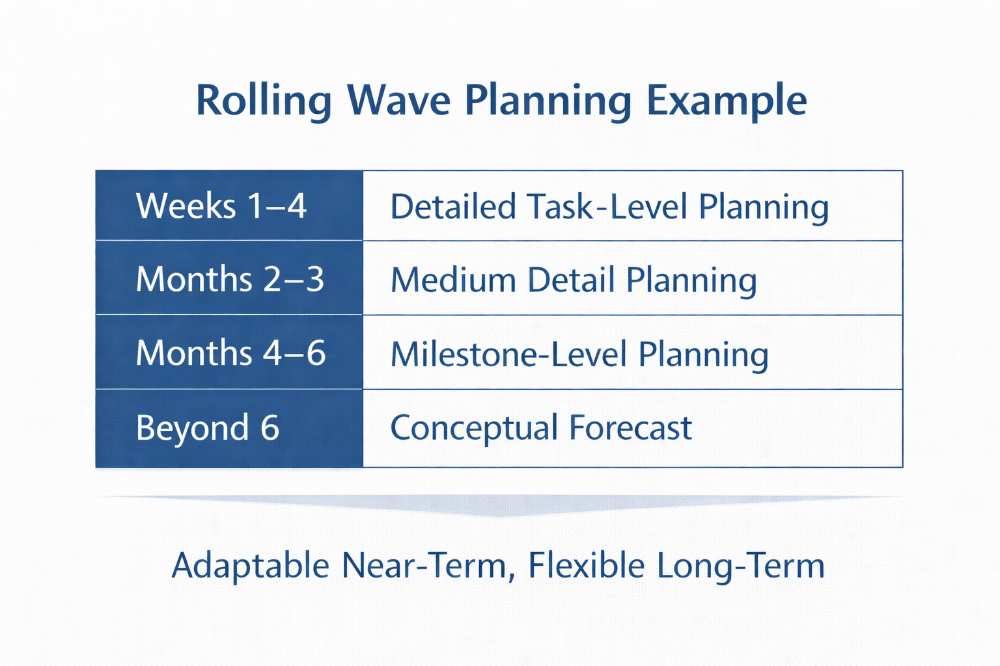
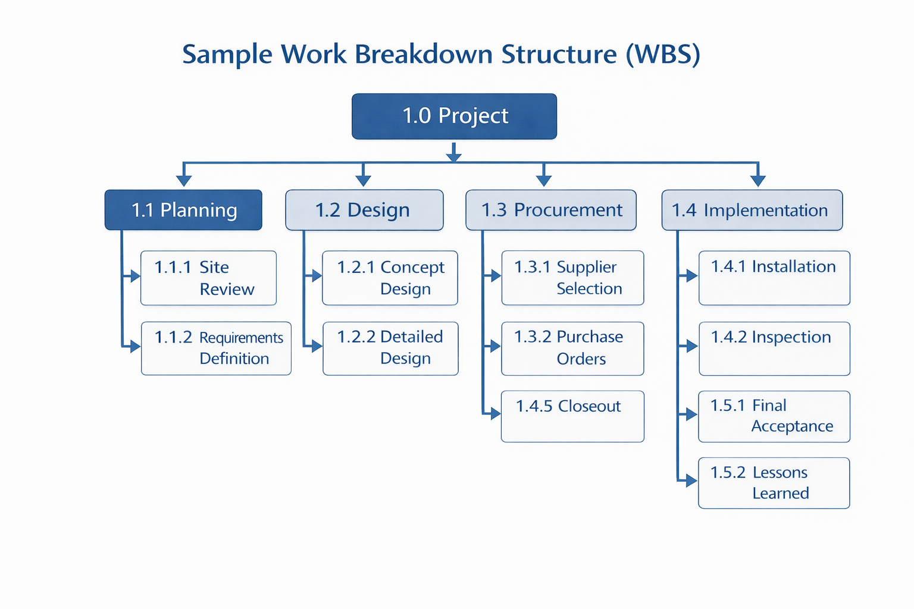
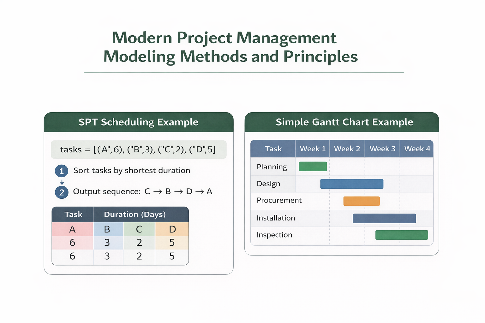
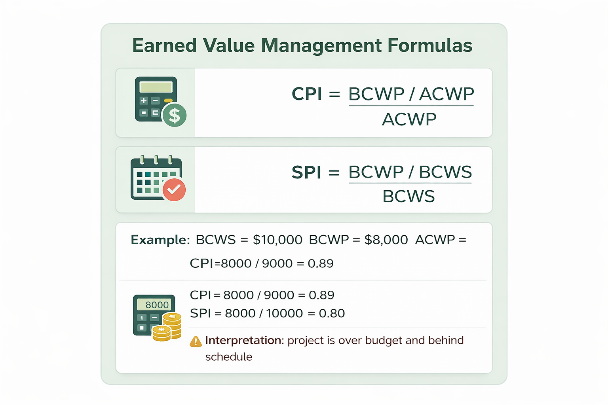
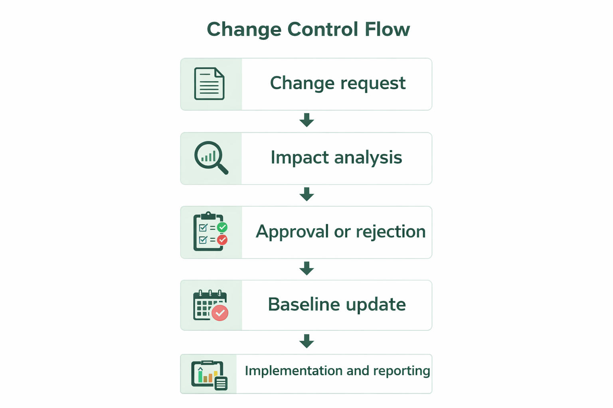

IE492-452 — Dr. Ranky
This assignment studies major engineering management and project management concepts by using a practical and analytical approach instead of only a descriptive one. In engineering management, a project is not simply a set of tasks. It is a temporary organized effort that uses limited resources, including labor, money, equipment, information, and time, in order to produce a defined result. Because these resources are limited, project management can be viewed as a decision system in which managers continuously balance trade-offs between competing objectives. A project has a start date, an end date, a measurable objective, and a limited budget, and it must be managed so that the final result is accepted by the customer or stakeholder. This means that successful project management requires more than technical skill alone. It also requires planning, communication, economic judgment, staffing logic, risk awareness, and structured control. In the modern engineering environment described throughout Ranky’s project management materials and the engineering management course, the project manager must think like both an engineer and a business problem solver. The role is therefore interdisciplinary. It combines technical reasoning, organizational coordination, and economic decision making into one integrated system.
A more formal engineering definition of a project is that it is a multivariable optimization problem involving time, cost, and target value or scope. In simple terms, the project manager is always trying to satisfy these variables at the same time even though changing one usually affects the others. If the schedule must be shortened, then extra labor, overtime, or expedited procurement may increase cost. If scope increases, then both time and cost commonly rise as well. If the budget is reduced too far, then either performance, quality, or schedule may suffer. Because of this, project management is not just administrative coordination. It is the structured control of trade-offs. A useful analytical expression is to define the project objective as minimizing a function of time, cost, and scope subject to real limits. This can be shown as: Minimize f(T,C,S), subject to T being less than or equal to the required deadline, C being less than or equal to the approved budget, and S being greater than or equal to the required performance level. This small equation summarizes the logic of engineering project control because it shows that project success is constrained optimization rather than free choice.

A project management problem should be solved by a repeatable engineering method. First, define the objective in measurable terms. Second, identify the major deliverables. Third, break the work into smaller work packages. Fourth, estimate task durations, labor hours, and material costs. Fifth, assign responsibility and resources. Sixth, establish a baseline schedule and cost plan. Seventh, monitor actual performance. Eighth, compare actual results against the baseline and apply corrective action if needed. This is important because many project failures occur when work begins before the project has been clearly defined. In my own company model, this process would begin with identifying customer needs and turning them into measurable engineering requirements. Then the team would prepare a work breakdown structure, a schedule, a cost estimate, and a simple risk register. Progress would be reviewed weekly so that deviations are caught early rather than after they become expensive. This is how project management becomes defendable as an engineering solution instead of a loose management style.

Best practice for organizing and staffing a project office begins with understanding that the project manager, functional manager, and project team members do not all have the same role. The project manager integrates the work horizontally across departments. Functional managers provide the technical staff and control how technical work is performed in their area. Team members produce the actual deliverables. The project office should therefore be set up so that responsibilities are clear and not overlapping in a confusing way. A practical engineering project office could include the project manager, a technical lead, cost support, scheduling support, procurement support, and quality support. This type of structure is effective because each major control area has an owner. In my own company model, the project office would be small but clearly defined. The project manager would own coordination, communication, schedule updates, and stakeholder reporting, while discipline specialists would own design content and technical output. This improves accountability and reduces wasted effort caused by unclear authority.
To prepare for an engineering project management job interview, a candidate should be ready to discuss both technical and managerial issues. The applicant should understand how to respond to schedule delay, cost overrun, scope change, resource shortage, and team conflict. They should also be able to explain project documents such as the charter, plan, schedule, risk register, and progress report. Common interview questions might include: How do you handle a critical activity slipping behind schedule? How do you prioritize when multiple departments need the same engineer? How do you deal with a client who requests changes late in the project? What performance metrics do you use to judge whether a project is healthy? A strong engineering project manager must know enough technical material to communicate with specialists, enough economic logic to understand budget consequences, and enough leadership skill to guide people who may report to different managers at the same time.
Project teams are not easy to design and operate because people bring different work habits, backgrounds, communication styles, and priorities. Some team members are highly analytical, some are field-oriented, and some are administrative. Also, in many matrix-style organizations, the project manager does not fully control staffing because the staff still belong to functional departments. This can create confusion or conflict. Best practice is to begin with clear task definitions, clear lines of responsibility, regular status meetings, and written documentation of deliverables and due dates. Difficult people in project teams should be handled with direct but professional communication, specific performance expectations, and fact-based discussion of schedule or quality impact. In my own company model, I would first clarify the problem in objective terms, then meet with the person privately, then document agreed actions, and only escalate if the problem creates measurable risk to schedule, cost, or team performance. This keeps the focus on project success rather than personal conflict.
The best practices for project management functions can be summarized through the basic management functions of planning, organizing, directing, and controlling. Planning determines what must be done, by whom, by when, and with what resources. Organizing creates the structure needed to carry out the work. Directing keeps work moving through communication and decision making. Controlling compares actual results to the baseline and triggers corrective action when necessary. These functions are especially important in engineering work because technical projects often involve uncertainty, specialized knowledge, and many dependencies. Among the most important documents in this process are the project charter and the project plan. The charter is the formal authorization document. It explains why the project exists, what the objective is, who the major stakeholders are, and what constraints exist at a high level. The project plan is more detailed. It explains how the project will actually be executed, tracked, reported, and corrected.
The project charter is important because it gives legitimacy and direction to the project. Without it, the team may not have one agreed objective. The project plan is equally important because it connects scope to time, cost, and risk control. A strong plan should include major milestones, budget estimates, task logic, staffing, reporting frequency, and procedures for scope change. The rolling wave or moving window approach is especially useful when future work cannot yet be defined in full detail. Under this approach, near-term activities are planned in detail, while later work is planned at a higher level and then refined as more information becomes available. This is a realistic engineering technique because many projects begin before all technical uncertainty has been removed. In my own company model, I would use detailed planning for the next month, medium detail for the next quarter, and milestone planning for the longer-term phase. This improves realism and makes the plan more useful than pretending the entire project can be forecast perfectly on the first day.

A Work Breakdown Structure, or WBS, is one of the most useful engineering planning tools because it breaks a project into smaller and more manageable parts. Instead of discussing the project as one large objective, the WBS decomposes the work into phases, activities, and work packages. This improves estimating, assignment of responsibility, schedule development, and cost tracking. A simple engineering WBS may begin with planning, continue through design, procurement, implementation, testing, and closeout, and then break each of those areas into smaller tasks. The software does not create the logic on its own. The manager creates the logic by decomposing the work correctly.

Modern project management uses both visual models and algorithmic logic. One example is the Shortest Processing Time, or SPT, scheduling rule. In a simple form, this method schedules the smallest-duration jobs first in order to reduce average completion time. Although not all engineering projects should be scheduled this way, it is a good example of how management decisions can be supported by structured logic. If four tasks have processing times of 6, 3, 2, and 5 days, then the SPT sequence would be 2, 3, 5, and 6. This illustrates how project management can incorporate repeatable methods rather than pure intuition. Gantt charts are another useful tool because they convert the schedule into a visual timeline that shows when activities begin, end, and overlap.

Work Breakdown Structure, risk management, stakeholder management, and resource allocation are all closely connected. The WBS defines the work. Risk management identifies what could go wrong in that work. Stakeholder management identifies whose support is needed and who can influence the project. Resource allocation determines whether labor, money, equipment, and materials are available when needed. If one of these areas is weak, the others are affected. For example, a poorly defined WBS makes risk analysis weak because nobody clearly knows what tasks exist. Weak stakeholder involvement can delay approvals. Poor resource allocation causes schedule slippage. In my own company model, risk management would be handled by identifying likely delays, cost uncertainties, vendor risks, weather or site issues, and technical review risks, then assigning an owner and response for each. Stakeholder management would involve regular communication with the client, executives, design staff, vendors, and inspectors. Resource allocation would be reviewed weekly to avoid bottlenecks on critical tasks.
Earned Value Management, or EVM, is one of the clearest analytical tools in project management because it compares the value of planned work, the value of completed work, and the actual cost of that completed work. This allows the manager to determine whether the project is behind schedule or over budget in a measurable way. A common set of terms is BCWS for budgeted cost of work scheduled, BCWP for budgeted cost of work performed, and ACWP for actual cost of work performed. The Cost Performance Index is BCWP divided by ACWP, and the Schedule Performance Index is BCWP divided by BCWS. If CPI and SPI are equal to one, the project is performing exactly as planned. If they are less than one, performance is unfavorable. If they are greater than one, performance is favorable. This is valuable because it changes vague status reporting into mathematical performance reporting.

Engineering management also uses financial methods to support better decisions. Time Value of Money means that money available today is worth more than the same amount in the future because it can be invested and earn a return. For example, if a company invests $10,000 today at an annual rate of 5 percent for 3 years, the future value becomes 10,000 multiplied by 1.05 raised to the third power, or about $11,576. Present worth works in the opposite direction by discounting future cash flows back to the present. Benefit-Cost Ratio compares total benefits to total costs. If benefits are $150,000 and costs are $100,000, then the ratio is 1.5, which indicates an economically acceptable project. Break-even analysis identifies the quantity at which total revenue equals total cost. If fixed cost is $50,000, selling price is $20 per unit, and variable cost is $10 per unit, then break-even quantity is 50,000 divided by 10, or 5,000 units.
These methods are useful in my own company model because engineering decisions should not be based only on technical preference. If one design alternative has a higher initial cost but much lower maintenance cost over its life, then life-cycle costing may show that it is economically superior. Inflation should also be considered because future labor and material prices may rise. Depreciation matters when equipment is purchased and used over time. Sensitivity analysis is useful because it shows how much the result changes if key assumptions such as demand, labor rate, or material cost change. The engineering manager should therefore combine project control metrics like CPI and SPI with economic methods such as present worth, benefit-cost ratio, inflation adjustment, life-cycle cost, and break-even analysis. That combination supports better business decisions.
Pricing is a strategic decision rather than only a cost calculation. Cost-plus pricing begins with estimated project cost and then adds profit margin. If total project cost is $80,000 and the firm wants a 20 percent markup, the selling price becomes $96,000. Value-based pricing is different because it depends on the benefit perceived by the customer. If the project saves the customer $500,000 in energy or operating cost, then a price of $100,000 may still be attractive even if internal cost is much lower. Competition-based pricing reacts to market conditions and competitor bids. Target cost pricing begins with the price that the market will tolerate and then forces the design and delivery method to fit within that cost. Negotiated pricing is common in long-term professional relationships where contract terms, shared risk, and future business all influence the final number. In my own company model, I would use cost-plus for small internal jobs with predictable scope, value-based pricing when the customer gains major measurable savings, and negotiated pricing when the project is part of a longer strategic client relationship.
Some companies do not provide transparency in their pricing process because detailed pricing may reveal profit margins, supplier rates, strategic assumptions, or negotiation limits. Some companies also do not know the true cost of their products because indirect costs are allocated poorly, labor tracking is weak, or scope changes are not measured accurately. The pricing review procedure should therefore examine labor hours, material estimates, indirect costs, risk allowance, contingency, market conditions, and scope assumptions before a bid is released. Dynamically changing costs should be managed through regular estimate updates, contingency review, escalation assumptions, supplier communication, and controlled scope management. If these controls are weak, a project may appear profitable at award but become unprofitable during execution.
Change management is the structured method used to review, approve, reject, document, and implement change. Engineering projects almost never finish with zero change because requirements evolve, design issues appear, materials change, and stakeholder expectations shift. The important issue is not whether change occurs, but whether it is controlled and evaluated. A sound change process begins with the change request. Then the project team studies the impact on time, cost, scope, quality, and risk. After that, the request is approved or rejected by the proper authority, and if it is approved, the schedule and budget baselines are updated. This process is important because uncontrolled change, often called scope creep, is one of the most common reasons that projects lose control of schedule and budget.

Sustainable green-focused project management should also be treated as part of change management and project decision making. A modern engineering project should not be judged only on whether it finishes. It should also be judged on environmental effect, waste generation, energy use, operating efficiency, and long-term sustainability. Product life-cycle assessment methods are useful because they examine the full life of the system, including raw materials, production, transportation, operation, maintenance, and disposal. In my own company model, I would compare alternatives not only by first cost but also by maintenance demand, energy consumption, replacement interval, and end-of-life impact. This leads to stronger engineering decisions because it treats the project as part of a larger system instead of an isolated short-term activity.
Best practice project closeout means more than saying that the work is done. It includes final acceptance of deliverables, closure of contracts, closure of charge numbers, archiving of records, and capture of lessons learned. This is important because future projects benefit from understanding what worked well and what created delay, cost growth, or confusion. Best practice project teamwork depends on communication, trust, role clarity, accountability, and consistent support from leadership. Best practice to avoid project failure includes realistic planning, regular schedule review, risk assessment, budget tracking, pricing review, and fast response to emerging problems. What can go wrong in project management includes unclear objectives, poor estimates, weak communication, resource conflict, stakeholder disagreement, late scope changes, weak risk management, and lack of management support. These are not random failures. They are usually symptoms of weak structure or weak control.
Best practice for time management includes milestone tracking, understanding dependencies, maintaining realistic schedules, and responding quickly to slippage. Best practice for budget management includes baseline cost control, variance tracking, forecast updates, and disciplined approval of changes. Best practice for the pricing review procedure includes reviewing assumptions, labor rates, overhead, supplier costs, risk, and contract terms before work begins. Some companies do not provide transparency in pricing because of internal politics or market strategy, and some firms do not know the true cost of their products because cost systems are fragmented. This is why engineering project management must be analytical. A good project presentation should therefore include diagrams, schedules, formulas, risks, and economic reasoning. A project presentation is strongest when it shows not only what happened, but why it happened and what decision should follow from that information.
In conclusion, engineering project management is best understood as a structured decision system for achieving technical and business objectives under constraint. The project manager must balance time, cost, scope, risk, stakeholder needs, environmental considerations, and long-term value while coordinating people from different functional backgrounds. The concepts discussed in this assignment, including the charter, plan, WBS, rolling wave planning, Gantt charts, risk management, stakeholder management, pricing strategies, earned value management, and engineering economics, all support that central goal. The most important lesson is that project management is not just a set of forms or meetings. It is a disciplined engineering process supported by logic, data, communication, and adaptability. A company that manages projects well is more likely to control risk, satisfy customers, improve financial performance, and create sustainable value over time.
Kerzner, Harold. Project Management: A Systems Approach to Planning, Scheduling, and Controlling. 12th ed., Wiley, 2017.
Ranky, Paul G. Intro Project Management Multimedia eBook, CIMware UK and USA.
Student-created visuals may be prepared in Excel and Office Suite and inserted into this page as supporting technical illustrations.